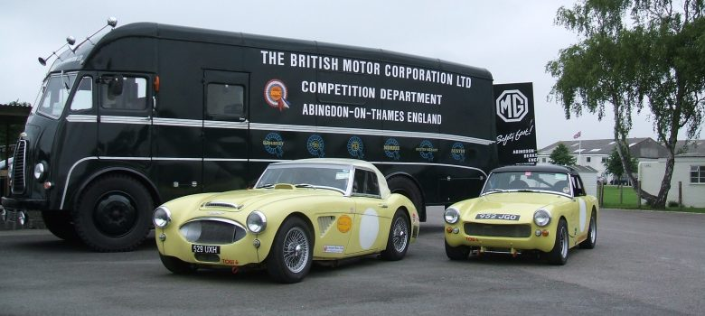

Est. 1977 · Stockport
Our Story
Merlin Classic Cars is a small, dedicated family business based near Stockport, Cheshire. Our family has been involved in the classic and vintage vehicle trade since 1977 — long before we opened our doors commercially in 1983.
What began as a passion has grown into one of the most respected classic car restoration businesses in the North of England. We are particularly well known as Austin Healey restoration specialists, having worked on dozens of these beautiful cars over the years — from Frogeye Sprites to the mighty 3000 MkIII.
But our expertise extends far beyond any single marque. We have worked on virtually every significant British and European classic — from Rolls Royce Silver Shadows to Ford Escort Cosworths, from E-Type Jaguars to one-off prototypes. No vehicle is too rare or too unusual.
We are proud to have produced vehicles that have won multiple concours d'elegance awards — including at Goodwood — and our work appears in museums and private collections around the world.
Today, while we remain proud of our restoration heritage, we also place great emphasis on servicing and ongoing maintenance — helping owners keep their classics in perfect condition without necessarily committing to a full restoration.
Our family begins working in the classic vehicle trade — restoration, coachbuilding and engineering.
Merlin Classic Cars formally established, based near Stockport, Cheshire.
Reputation for Austin Healey work grows. Multiple concours awards. Austin Healey BN3 prototype restored — now in the Austin Healey Museum.
Scope expands. Race preparation work begins. Goodwood Concours d'Elegance wins. Ford Anglia from TV's Heartbeat restored.
One-off Delage D8S — one of only two surviving in the world — completed. Range of services broadened to include all aspects of classic car care.
Over 200 restorations completed. Continuing to serve classic car owners with the same passion, care and attention to detail as always.
Our Workshop
Our workshop contains both the original tools used on these vehicles when they left the factory, alongside their modern counterparts — operated by skilled motor and bodywork engineers with decades of experience.
Why Merlin
We are enthusiasts first and a business second. Every car that comes into our workshop is treated with the same care we'd give our own. We never cut corners.
We photograph your vehicle throughout every stage of its restoration. This becomes part of the car's documented history — invaluable for provenance and insurance.
We provide detailed estimates, not vague quotes. We'll always tell you exactly what needs doing and why. No hidden extras, no surprises when you collect.
Multiple concours d'elegance wins at prestigious events including Goodwood. Our cars have competed and won at the highest levels of classic car competition.
From a routine oil change to a complete frame-off restoration of a one-of-two-in-the-world Delage — our team has the skills to handle any challenge.
Small enough to care deeply about every job; experienced enough to handle anything. You'll always deal with people who know your car personally.
Our Expertise
While we work on all makes, certain marques represent areas of particular depth and experience.
Our primary speciality. We have restored dozens of Healeys — 100-4, 100-6, 3000 MkI/II/III, BN3, Frogeye and Sprite. Multiple concours wins. The BN3 prototype now in the Austin Healey Museum was our work.
E-Type, XK and race variants. We have prepared the Jaguar Knobbly to race specification and carried out restoration work on E-Types to a very high standard.
MGB, MGB GT and the wider MG range. Our MGB GT race car build demonstrates the depth of our mechanical and fabrication capabilities.
The pinnacle of classic British engineering. We approach Rolls Royce work with the reverence and precision these cars demand.
From the Ford Anglia Police Car from TV's Heartbeat to the Escort Cosworth race car — our Ford work spans a wide range of models and applications.
From the Delage D8S (one of two in existence) to the 1934 Morris Earl's Court Showcar, we relish the challenge of unique and extraordinary vehicles.
Testimonials
"Chris and the team restored my Austin Healey 3000 to a standard that surpassed my highest expectations. The car won best in class at its first concours event after the restoration. The attention to detail throughout — and the photographic record they kept — is extraordinary."
Full concours restoration
"I've brought my Frogeye Sprite to Merlin for servicing and maintenance for the last six years. They're honest, knowledgeable, and clearly passionate about these cars. They never try to sell you work you don't need, and the car has never run better."
Ongoing servicing & maintenance
"The E-Type came back from Merlin looking and running better than it ever did. From the initial estimate to final collection, the communication was exemplary. They clearly understand what these cars mean to their owners."
Full restoration
"I was nervous entrusting anyone with the Rolls — it's been in the family for forty years. Merlin treated it with the reverence it deserved. The work was immaculate and the experience was completely stress-free."
Partial restoration & servicing